臺灣木瓜專業圖鑑
臺北農產運銷公司內部培訓自主學習資料
9 品種完整收錄 · 北農 I 類品名代號對照
木瓜（Carica papaya）為番木瓜科多年生半草本果樹，原產熱帶美洲，清末引入臺灣，1907 年起逐漸普遍栽培。別名番瓜、番木瓜，因富含維生素 A、C、β-胡蘿蔔素與蛋白分解酵素「木瓜酵素」，素有萬壽果之稱。
臺灣木瓜週年生產，5 至 9 月為盛產期，此時日照充足、光合作用效率高，果實糖度與風味最佳。為避免蚜蟲傳播輪點毒素病，產業以網室栽培為主；台農二號約佔全臺栽培面積 90%，是批發市場絕對主力。北農果菜品名代碼表中，木瓜屬 I 類，另按網室紅肉、一般紅肉、日昇種、青木瓜分列代號。
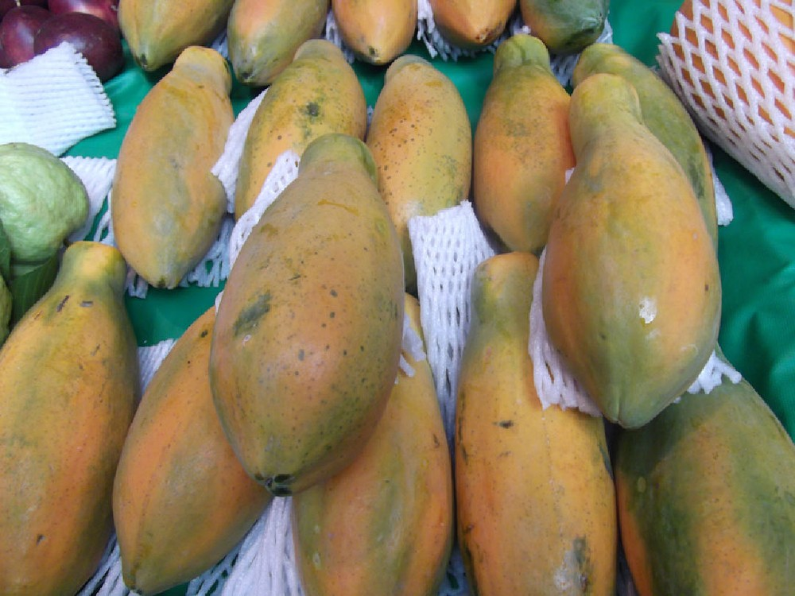
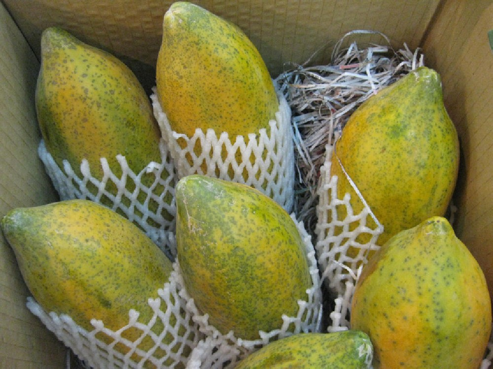
左：集貨市場的黃熟木瓜 ｜ 右：逐果套網袋以減少擦壓傷（圖：農業部農漁生產地圖）
木瓜為週年生產果品，北農依品項區分貨件。淺色為供應期、深色為盛產期；橫軸由當年度 1 月延伸至翌年 6 月，週年供應的橫條表示同一週期延續。
農業部與臺南區農業改良場資料均指出木瓜週年生產，5 至 9 月為品質與產量最佳的盛產期；官方未提供逐品種產期差異，故本圖以北農 I 類品項呈現。青木瓜為未熟果，無明顯盛產高峰。
依臺南區農業改良場資料，全臺木瓜栽培面積近年約 2,450 公頃（早期統計曾近 3,000 公頃），主要產區以屏東縣、臺南市各約三成為最多，其次為高雄市、南投縣、嘉義縣與雲林縣。農漁生產地圖列出的重點鄉鎮包括南投埔里、名間、竹山、國姓，雲林林內，嘉義中埔、水上，臺南大內、楠西、玉井、南化、山上，高雄美濃、六龜、杉林，屏東高樹、新埤、長治、內埔，以及臺東卑南。
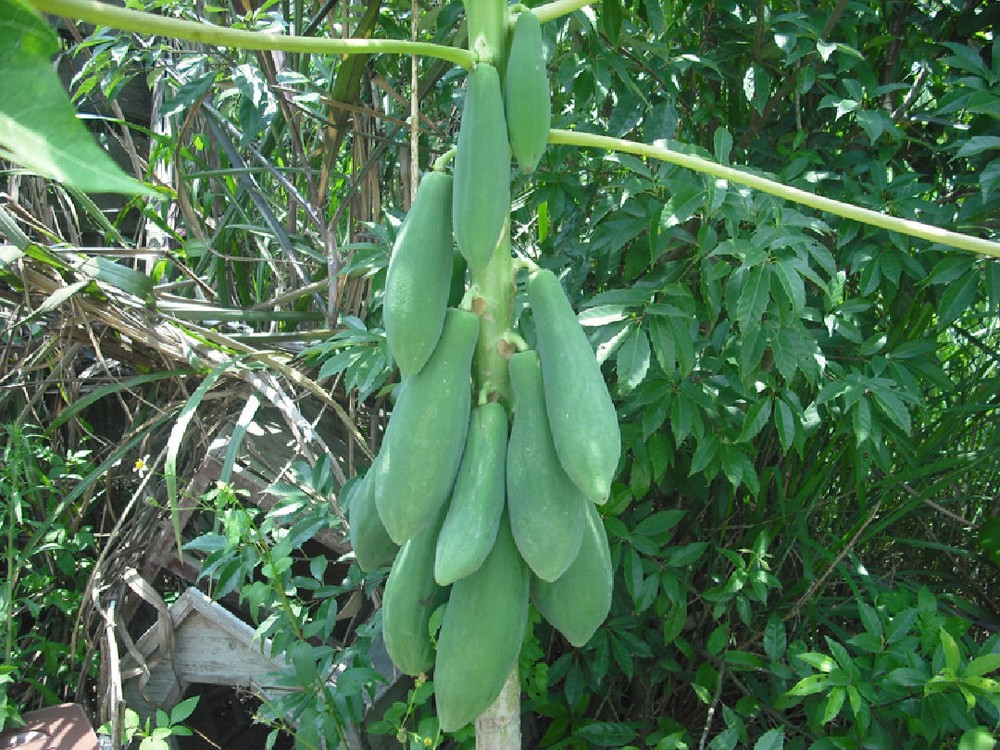
木瓜植株連續著果情形，果實由下往上陸續成熟（圖：農業部農漁生產地圖）
| 項目 | 官方栽培要點 |
|---|---|
| 溫度 | 生育最適 25–30 ℃，日均溫須在 16 ℃ 以上；下霜即受凍害，中南部海拔 500 公尺以上不適經濟栽培 |
| 排水 | 根部浸水 24–48 小時即腐爛，宜高畦、排水溝，雨後不可積水 |
| 土壤 | 疏鬆肥沃、富含有機質、地下水位低，pH 6.0–6.5 的砂質壤土；忌連作，廢耕後須隔 3 年 |
| 網室 | 32 目白色防紫外線網密閉披覆，骨架高 3.0–3.6 公尺；10 月底前定植，5 月下旬至 6 月上旬拆網 |
| 授粉 | 網室內雌株無法自然授粉，須人工授粉；園區四周栽植約 2% 佛州種雄株作授粉樹 |
| 病害 | 輪點毒素病由蚜蟲媒介，是採用網室與清潔健康苗的主因；網室內白粉病、紅蜘蛛與畸型果須加強管理 |
依農業知識入口網木瓜主題館品種目錄，扣除未列入本圖鑑的品項後，收錄 9 個市場流通與育種史上具代表性的品種，分為三類。各品種照片逐一對應官方條目，不以他品種照片替代。
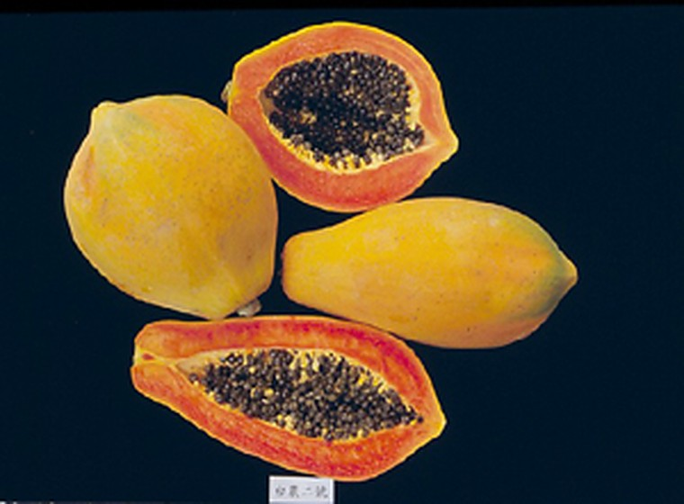
台農二號、日陞、紅妃、台農十一號小寶。市場實際流通與新近推廣的品項。
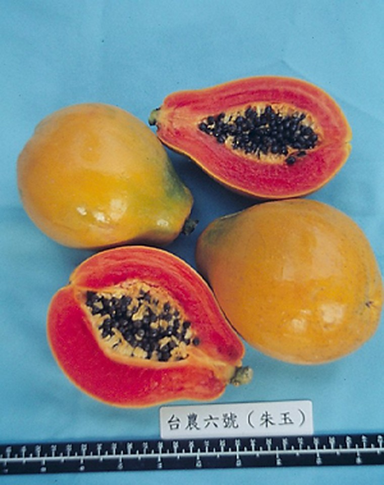
台農五號、台農六號朱玉。以耐病、矮生、網室適栽為育種目標。
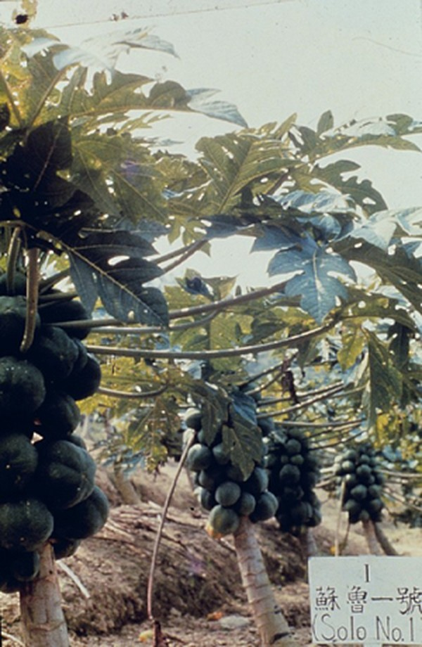
蘇魯一號、台農一號、台農三號。官方條目未提供果實照，圖為蘇魯一號植株。
台農二號果實與剖面，果皮濃綠轉黃、果肉紅色（圖：農業知識入口網，原圖含官方品種標籤）
| 項目 | 特徵 |
|---|---|
| 育成 | 民國 60 年（1971）農業試驗所鳳山熱帶園藝試驗分所，泰國種 × 日陞種一代雜交 |
| 果形 | 雌果橢圓型、兩性果長型，果形平整美觀 |
| 果重／糖度 | 平均 1,100 公克；11–12 °Brix |
| 果肉 | 紅色、汁多味爽，果皮濃綠 |
| 產量 | 每株年產約 33 公斤 |
| 市場地位 | 全臺栽培面積約 90%，北農 I1 網室紅肉與 I2 一般紅肉的主要貨源 |
生育強健、開花早、結果部位低，為臺灣最主要的經濟栽培品種。成熟較速、貯運力較弱，產地多於果溝開始轉色時提早採收，再於運銷過程後熟。
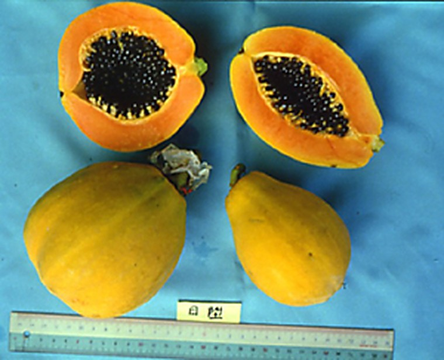
日陞果實與剖面，果型小、果肉橙紅（圖：農業知識入口網，原圖含尺標與品種標籤）
| 項目 | 特徵 |
|---|---|
| 引進 | 民國 56 年（1967）自夏威夷引進純化，59 年推廣 |
| 果形 | 雌果近圓型、兩性果梨形，果溝與果肋不明顯、畸型果極少 |
| 果重／糖度 | 平均約 400 公克；可達 15 °Brix |
| 果肉 | 鮮紅色、氣味清香、品質優 |
| 栽培特性 | 果小、產量低，僅適高屏地區網室栽培 |
| 北農代號 | I3 日昇種，語音查詢碼 070903 |
北農品名代碼表以「日昇種」登錄，與農業資料的「日陞」為同一品種。因果形小，分級規格與箱裝淨重均與台農二號不同，實務上須分開申報。
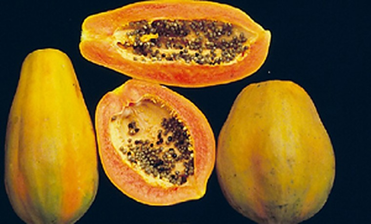
紅妃果實與剖面，果肉橙紅、果形大（圖：農業知識入口網）
| 項目 | 特徵 |
|---|---|
| 育成 | 民國 75 年（1986）農友種苗公司一代雜交品種 |
| 果形 | 兩性株長橢圓型、雌株近球型，果形大 |
| 果重／糖度 | 通常 1.3–2 公斤，最大可達 3 公斤；糖度約 12 °Brix |
| 果肉 | 肉色紅美、肉厚細膩多汁，低溫期肉色較淡 |
| 栽培特性 | 耐輪點病毒病強、結果期早、結果部位低矮較抗風、產量高 |
大果型紅肉品種，早生且耐病，適合颱風季前的產區；低溫期果肉著色轉淡是現場分級時常見的外觀差異。
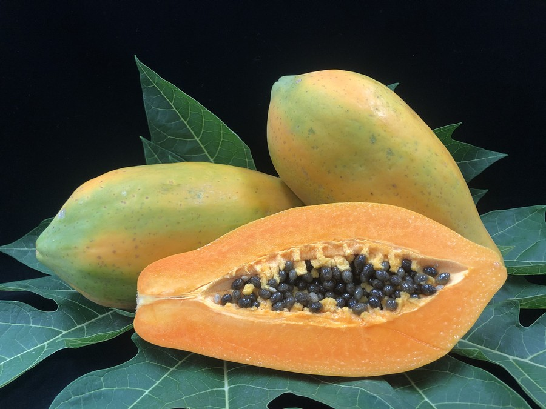
台農十一號小寶全果與剖面，果肉橙黃色（圖：農業知識入口網，113 年新增條目）
| 項目 | 特徵 |
|---|---|
| 發布 | 民國 113 年（2024）農業知識入口網新增品種條目 |
| 果形 | 長橢圓形，結果整齊、畸形果少 |
| 果重／糖度 | 平均 800–900 公克，較台農二號小 |
| 果肉 | 橙黃色，與台農二號紅肉形成市場區隔 |
| 栽培特性 | 單節著果數高、儲運性佳，兼具台農二號良好生長習性 |
以小果型對應小家庭需求，橙黃肉色可打破市場單一紅肉品種的結構；官方資料標明深具推廣潛力，屬新興品項。
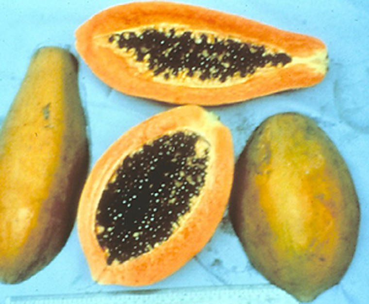
台農五號果實與剖面，果肉橙紅（圖：農業知識入口網）
| 項目 | 特徵 |
|---|---|
| 育成 | 民國 76 年（1987）9 月命名推廣，臺灣第一個耐輪點病毒病新品種 |
| 親本 | 佛州種 × 哥斯達黎加紅肉種雜交後代再雜交 |
| 果形 | 雌果橢圓形、兩性果長形；矮生，離地 56 公分即開始結果 |
| 果重／糖度 | 10–11 °Brix，冬季品質反較台農二號為優 |
| 果肉 | 橙紅色 |
| 貯運 | 果皮較薄、後熟較快，貯運力較弱，宜提早採收 |
早生，約比台農二號早一個月採收；對輪點毒素病與紅蜘蛛抵抗性較強，可越冬繼續生產。夏季風味略遜，可透過疏果與施肥改善。
台農六號朱玉果實與剖面，果肉深橙紅豔麗（圖：農業知識入口網，原圖含品種名標籤）
| 項目 | 特徵 |
|---|---|
| 育成 | 民國 87 年（1998）3 月命名推廣，同年 6 月命商品名「朱玉」 |
| 親本 | 蘇魯一號 × 日陞種雜交後代再雜交 |
| 果形 | 雌果近圓形、兩性果短梨形；果長 12.0 公分、果徑 8.6 公分 |
| 果重／糖度 | 平均 444.6 公克；12.3 °Brix |
| 果肉 | 深橙紅豔麗、肉厚 2.0 公分，果肉利用率 69.3% |
| 株型／產量 | 莖節間短 1.9 公分、結果部位低 67.9 公分、株產量 24.8 公斤 |
矮生、適於網室栽植；正常梨型果高達 99.7%，五裂果與香蕉型果幾乎不發生，五至六月少有俗稱橡皮肉的現象。
此節三品種為臺灣木瓜育種的基礎材料，現多已退出主流栽培。農業知識入口網對應條目未提供果實照片，故僅以官方文字資料整理特徵表，不借用外觀相近品種的照片。下圖為蘇魯一號條目所附的植株照，作為早期引種栽培示意。
蘇魯一號植株照，非果實外觀照（圖：農業知識入口網）
官方條目僅提供植株照片，無果實照；本節開頭另置該植株照作為引種栽培示意
| 項目 | 特徵 |
|---|---|
| 引進 | 民國 43 年（1954）鳳山試驗分所自夏威夷引進，47 年純化推廣 |
| 果形 | 雌性果略呈球形、兩性果洋梨形 |
| 果重／糖度 | 平均 600 公克；12 °Brix |
| 果肉 | 深橙黃色、肉質細 |
| 產量 | 每株年產約 26 公斤 |
| 栽培特性 | 耐貯運、耐寒力較強，較適中北部地區栽培 |
臺灣早期引種選拔的基礎品種，亦為台農六號朱玉的育種親本之一，現已非市場主流貨源。
農業知識入口網本品種條目未提供果實照片
| 項目 | 特徵 |
|---|---|
| 育成 | 民國 60 年（1971）哥斯達黎加紅肉種 × 日陞種一代雜交 |
| 果形 | 雌果橢圓、兩性果長型；果皮光滑淺綠 |
| 果重／糖度 | 平均 900 公克；13 °Brix |
| 果肉 | 紅豔、具特殊香味 |
| 產量 | 每株年產約 30 公斤 |
| 栽培特性 | 抗疫病性強、早生、耐貯運；耐寒力差，不適中北部栽培 |
因輪點毒素病限制，在臺灣栽培面積有限；但高產與耐貯運特性使其在中南美洲成為主要栽培品種，是臺灣木瓜育種外銷的代表。
農業知識入口網本品種條目未提供果實照片
| 項目 | 特徵 |
|---|---|
| 育成 | 民國 60 年（1971）菲律賓種 × 日陞種一代雜交 |
| 果形 | 雌果橢圓型、兩性果長型；矮生，離地 72 公分即開始結果 |
| 果重／糖度 | 平均 1,300 公克；11–12 °Brix |
| 果肉 | 橙黃色、品質中等 |
| 產量 | 每株年產約 35 公斤 |
| 用途 | 家庭、冰果店與加工兼用；耐寒性稍強，較適中北部栽培 |
大果豐產、肉色橙黃，適合加工與冰果用途；依臺南區農業改良場品種產業現況資料，此類早期台農系列現已少有推廣種植。
木瓜在北農果菜品名代碼表中屬 I 類，依栽培方式、果肉色與品種細分代號。拍賣實務以品名代號區分貨件，並與統一編碼、等級、大小規格共同構成交易標示。
| 品名代號 | 品名 | 語音查詢碼 | 統一編碼 | 對應貨件 |
|---|---|---|---|---|
| I1 | 網室紅肉 | 070901 | 2030209000011 | 台農二號為主，網室栽培 |
| I2 | 一般紅肉 | 070902 | — | 露地與其他紅肉品種 |
| I3 | 日昇種 | 070903 | 2030209000035 | 日陞（日昇）小果種 |
| I4 | 青木瓜 | 070904 | 2030209000042 | 未熟果，供料理與加工 |
| I0 | 其他 | 070900 | — | 未單獨列代號品種與進口貨件 |
| 等級 | 品質標準 |
|---|---|
| 特級 | 成熟度轉黃比例 5–25%（果溝暗黃至 3 明溝黃），果形完整，果溝色澤橙黃，外觀無瑕疵 |
| 優級 | 成熟度轉黃比例 50% 以下（果溝 5 明溝黃），果形尚完整，果實轉色良好，外觀輕微瑕疵 |
| 良級 | 品質次於優級品，具有商品價值者 |
| 等級 | 品質標準 |
|---|---|
| 特級 | 未成熟，果形完整，色澤優良，無風疤、病蟲害及其他傷害 |
| 優級 | 未成熟，果形尚完整，色澤良好，無病蟲害及其他嚴重傷害 |
| 良級 | 品質次於優級品，但有商品價值者 |
| 規格 | I1 台農二號 | I3 日陞種 | I4 青木瓜 |
|---|---|---|---|
| 特大 2L | 1,000 公克以上，每箱 12 粒以內 | — | — |
| 大 L | 800–1,000 公克，12–14 粒 | 600 公克以上，8–10 粒 | 1.2–1.5 公斤，8–10 粒 |
| 中 M | 600–800 公克，15–20 粒 | 500–600 公克，10–12 粒 | 1–1.2 公斤，10–12 粒 |
| 小 S | 未達 600 公克，20 粒以上 | 未達 500 公克，12 粒以上 | 未達 1 公斤，14 粒 |
| 品項 | 紙箱外徑 | 淨重 |
|---|---|---|
| I1 台農二號 | 七號箱 50 × 33 × 27 公分，可微調內縮 1–2 公分 | 12 公斤 |
| I3 日陞種 | 七號箱 50 × 33 × 16 公分，可微調內縮 1–2 公分 | 6 公斤 |
| I4 青木瓜 | 520 × 340 × 250 公厘 | 12 公斤 |
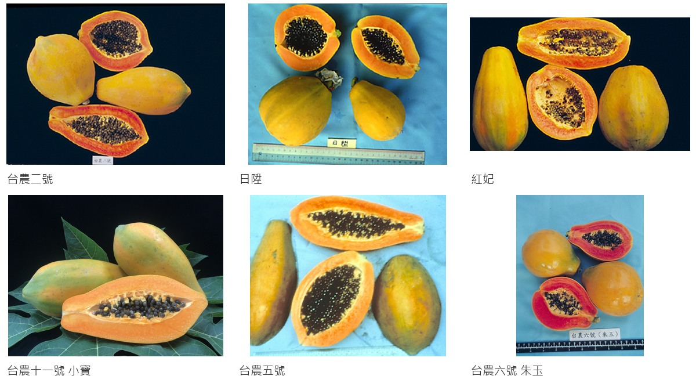
六個有官方果實照的品種對比，由左上至右下：台農二號、日陞、紅妃、台農十一號小寶、台農五號、台農六號朱玉（原圖：農業知識入口網）
| 品種 | 來源／年代 | 平均果重 | 果肉與糖度 | 市場角色 |
|---|---|---|---|---|
| 台農二號 | 1971 泰國種 × 日陞種 | 1,100 g | 紅肉 11–12 °Brix | 主力，約 90% |
| 日陞 | 1967 夏威夷引進 | 約 400 g | 鮮紅肉 可達 15 °Brix | 北農 I3 小果種 |
| 紅妃 | 1986 農友種苗 | 1.3–2 kg | 紅肉 約 12 °Brix | 大果、耐病 |
| 台農十一號 | 2024 官方新增 | 800–900 g | 橙黃肉 | 小家庭新興品 |
| 台農五號 | 1987 耐病育種 | 約 1,400 g | 橙紅肉 10–11 °Brix | 早生、耐輪點病 |
| 台農六號 | 1998 朱玉 | 444.6 g | 深橙紅 12.3 °Brix | 網室矮生 |
| 蘇魯一號 | 1954 夏威夷引進 | 600 g | 深橙黃 12 °Brix | 早期引種親本 |
| 台農一號 | 1971 雜交育成 | 900 g | 紅肉 13 °Brix | 耐貯運、外銷型 |
| 台農三號 | 1971 雜交育成 | 1,300 g | 橙黃 11–12 °Brix | 加工兼用 |
農業部農業知識入口網 — 木瓜主題館與品種條目：
產銷與產業資料：農漁生產地圖 — 木瓜 ｜ 臺南區農業改良場 — 木瓜盛產期說明 ｜ 農業試驗所 — 本省木瓜優良品種簡介 ｜ 臺南區農業改良場 — 木瓜品種及種苗產業現況介紹
北農分級包裝：果菜品名代碼表（水果類） ｜ I1 木瓜台農二號 ｜ I3 日陞種 ｜ I4 青木瓜
所有品種照片與資料均引用自農業部農業知識入口網、農漁生產地圖及北農公開資料，圖片版權歸原機關所有。三個歷史品種因官方未提供果實照，圖鑑誠實標註缺圖，不以其他品種照片替代。